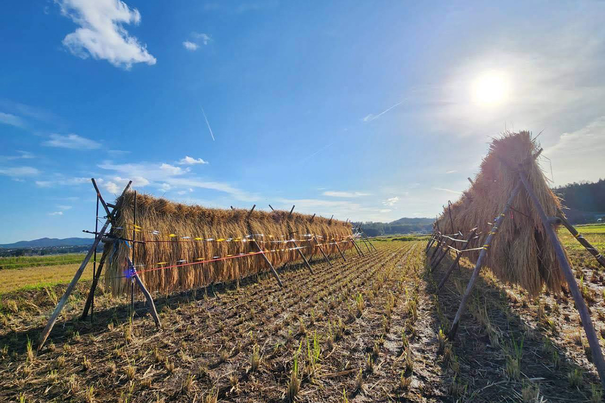
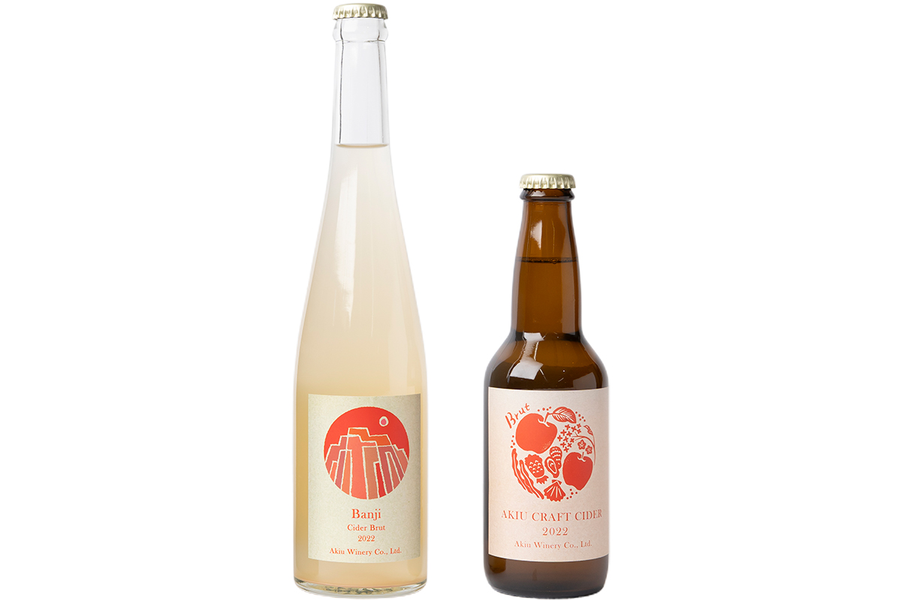
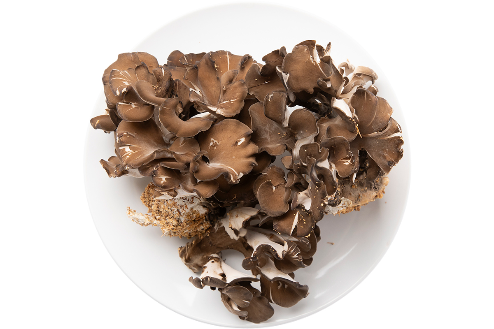

Префектура Мияги · Сендай · еда
Сендай на вкус: рис, сидр, мёд и грибы, которые советует повар-огородник

Самое вкусное, уверен повар-огородник, всегда местное: за ним стоит поехать или хотя бы заказать его домой. Переехав в Сендай, он нашёл город, где горы, море и поля так близко, что к любому производителю можно приехать в тот же день.
Рис
Поле у подножия Идзумигатакэ
Автор этих советов совмещает две профессии: он выращивает рис и овощи и работает поваром. Он много занимается социальными проектами и готовит на выездных мероприятиях. Его жена родилась в семье рисоводов, которые возделывают землю в окрестностях Сендая уже 300 лет. Родительский дом стоит у подножия горы Идзумигатакэ, и из окна гостиной видно рисовые поля. Ради этого пейзажа, меняющегося от сезона к сезону, он и переехал в Сендай.
По его словам, продукты и пейзаж неотделимы друг от друга: пейзаж сохраняется, пока на этой земле что-то растят. Поэтому, взявшись помогать семье жены с рисом, он хотел сберечь и вкусный рис, и красивые поля.
Хозяйство называется «Идзумигатакэ фумото Судзумэ ноэн». Здесь растят рис сорта «Сасасигурэ» без удобрений и пестицидов, полагаясь только на силы природы, а «Хитомэборэ» и «Косихикари» выращивают, сводя гербициды и химию к минимуму. Рис хозяйства получал главный приз сельхозкооператива Сендая. На поля течёт чистая горная вода, и, может быть, поэтому вкус у риса удивительно ясный: первая ложка так же хороша, как и последняя. Только здесь автор, по его признанию, понял, каким бывает настоящий вкус риса.
Винодельня
Акиу: место, где все знакомятся
Сендай, по словам автора, щедрое место: горы, море и поля рядом, и до производителя можно доехать быстро. В Токио собирается вкусное со всей страны, но спелую клубнику по-настоящему можно попробовать только там, где она растёт.
С этой мыслью он начал изучать местную еду, и первой его остановкой стала винодельня Akiu Winery в онсэне Акиу. Её основатель открыл винодельню в 2015 году, в том числе ради восстановления края после Великого восточнояпонского землетрясения 2011 года. Здесь регулярно устраивают вечера «теруаж» (от слов «терруар» и «мариаж»): местную еду подбирают к местному вину. При первой же встрече основатель сказал, что как раз искал ещё одного повара, и через эти вечера у автора разом появились знакомые среди фермеров и поваров округи.

На этих вечерах автор и сам вернулся к кулинарным встречам, которые раньше проводил в Токио. Друзья, связанные с едой, собираются на винодельне и готовят под разные темы, от ферментации до субпродуктов, и подбирают к блюдам напитки. Живя в Токио, он и представить не мог, что будет готовить на винодельне из местных продуктов и поднимать бокал молодого вина. Это знакомства, которые подарила еда Сендая, и он ими дорожит.
Akiu Winery
- Адрес
- префектура Мияги, Сендай, район Тайхаку, Акиу-мати, Юмото, Бивахара-ниси, 6
- Телефон
- +81 22-226-7475
- Часы работы
- 9:30–17:00
- Выходные
- вторник
- Сайт
- akiuwinery.co.jp
Друзья
Французская кухня из местной рыбы и мёд от музыкантов
С шеф-поваром ресторана Matsuda автор быстро нашёл общий язык. Шеф готовит почти только из местных продуктов, а рыбу сам покупает в порту и обрабатывает по японскому методу синкэй-дзимэ. Французские блюда из такой рыбы у него, по словам автора, великолепны.
EIGHT CROWNS это марка мёда, которую ведут двое музыкантов группы MONKEY MAJIK. Начали они с того, что сами сеяли цветы, которые любят пчёлы. Сырой мёд без нагрева автор называет лучшим.
Грибы
Чёрные майтакэ и сладости
Друг автора руководит компанией «Кою», которая принимает на работу людей с инвалидностью. Она выращивает чёрные майтакэ на подземной воде с горы Курикома, и этот продукт автор особенно советует попробовать. Сам он любит быстро окунуть грибы в молоко, обвалять в манной крупе и обжарить во фритюре, чтобы они хрустели.

Ещё один его знакомый по социальным проектам держит «Хапи кафэ». Там автор советует чизкейк и выпечку, а в 2024 году они собирались вместе заняться сладостями.
Компания «Кою»
- Телефон
- +81 228-52-2140
- Сайт
- kouyuu.net
«Идзумигатакэ фумото Судзумэ ноэн»